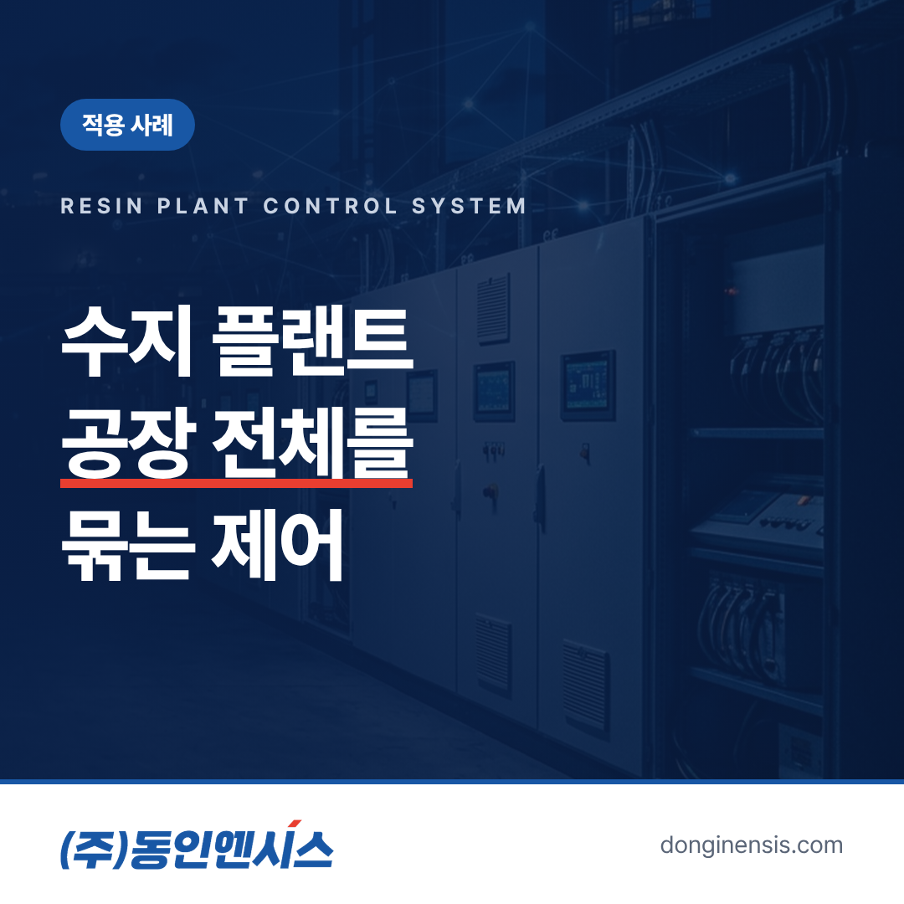
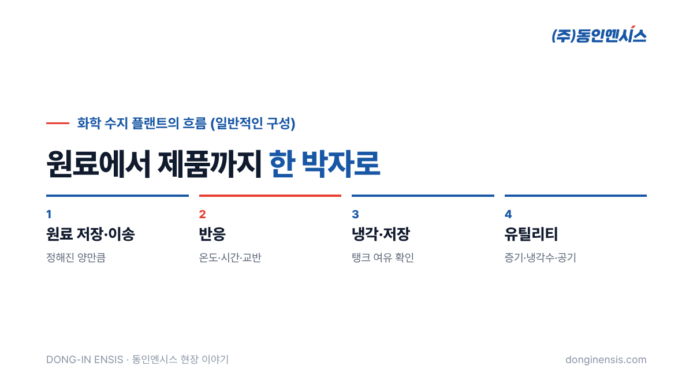
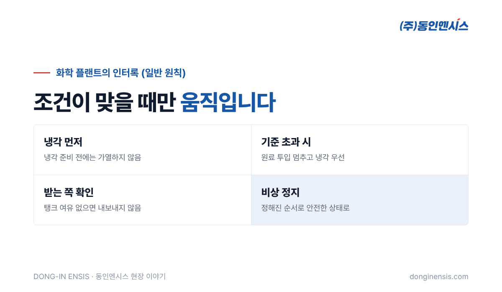

가구와 건축 자재에 쓰이는 목재 보드를 만들려면 나무 조각을 단단히 붙여 줄 접착제가 필요합니다. 그 접착제의 바탕이 되는 수지를 만드는 곳이 수지 플랜트입니다. 원료를 정해진 비율로 넣고, 정해진 온도에서 반응시키고, 식혀서 저장하기까지 여러 설비가 한 흐름으로 움직입니다. 1991년부터 부산에서 산업용 제어반을 설계·제작해 온 동인엔시스는 동화기업의 포르말린 수지 플랜트에서 전체 제어시스템의 설계와 제작을 맡았습니다. 이 경험을 바탕으로 수지 플랜트 제어가 어떤 일인지 풀어 보겠습니다.
제어반 회사가 맡는 일은 크게 두 가지로 나눌 수 있습니다. 펌프나 컨베이어처럼 설비 한 대의 제어반을 만드는 일, 그리고 여러 설비가 엮인 공정 전체의 제어시스템을 만드는 일입니다.
설비 한 대의 제어는 그 설비만 잘 돌면 됩니다. 하지만 플랜트 전체를 제어할 때는 설비와 설비 사이의 관계가 핵심이 됩니다. 원료 탱크의 수위가 낮으면 반응기에 원료를 넣지 않아야 하고, 반응기 온도가 오르면 냉각 설비가 먼저 움직여야 하며, 저장 탱크가 가득 차면 앞 공정의 배출을 멈춰야 합니다. 설비 하나하나가 잘 도는 것만으로는 부족하고, 서로의 상태를 보며 함께 움직여야 합니다. 그래서 수지 플랜트 제어에서는 각 설비의 제어반을 따로 설계하기 전에, 공정 전체에서 누가 누구의 상태를 알아야 하는지부터 그려 봅니다. 이 그림이 정확해야 나중에 설비를 하나 더 붙이거나 순서를 바꿀 때도 전체가 흔들리지 않습니다.
공장마다 구성은 다르지만, 일반적인 화학 수지 플랜트의 흐름은 크게 네 부분으로 볼 수 있습니다.
이 네 부분이 따로 움직이면 품질이 흔들리고, 함께 맞물려 움직여야 같은 제품이 반복해서 나옵니다. 특히 유틸리티는 눈에 잘 띄지 않지만, 냉각수가 부족한 순간 반응 공정 전체가 영향을 받기 때문에 제어시스템에서 반드시 함께 봐야 하는 부분입니다. 전체 제어시스템은 이 맞물림을 책임집니다.

수지의 품질은 무엇보다 원료 비율에서 시작합니다. 원료를 얼마나 넣었는지 정확히 재고, 정해진 양에 이르면 바로 멈춰야 합니다. 펌프와 밸브, 유량이나 무게를 재는 계측기가 PLC의 지시에 따라 함께 움직입니다.
반응은 온도와 시간에 민감합니다. 너무 빨리 데우거나 너무 오래 두면 원하는 제품이 나오지 않습니다. 그래서 가열과 냉각을 번갈아 조절하며 온도를 정해진 길을 따라 움직이게 합니다. 교반기의 회전도 반응이 고르게 일어나도록 돕는 중요한 변수이며, 인버터로 속도를 조절하는 경우가 많습니다.
원료를 넣는 순서, 데우기 시작하는 시점, 식히기 시작하는 시점이 정해져 있습니다. 이 순서를 사람이 매번 기억해 조작하는 대신, 제어시스템이 단계별로 진행하고 조건이 맞지 않으면 다음 단계로 넘어가지 않게 합니다.
Photorealistic photo of a stainless steel chemical reactor vessel with an agitator motor on top, insulated pipes, valves and pressure gauges, metal access platform with yellow railings, in a clean Korean chemical plant, daylight from high windows, no people, no brand logos, no readable text. 3:2 landscape.
화학 공정은 조작 하나가 어긋나면 품질 문제를 넘어 안전 문제로 번질 수 있습니다. 그래서 '이런 조건에서는 이 동작을 하지 않는다'는 인터록을 촘촘하게 겁니다. 일반적으로 이런 것들입니다.
인터록은 평소에는 보이지 않다가 이상이 생겼을 때 진가를 드러냅니다. 운전자가 실수로 잘못된 버튼을 눌러도 설비가 위험한 동작을 하지 않도록 막아 주는 마지막 울타리이기도 합니다. 그래서 설계 단계에서 '무엇이 잘못될 수 있는가'를 하나씩 따져 보고, 공장검사와 시운전에서 일부러 그 조건을 만들어 제대로 걸리는지 확인합니다.
플랜트 전체를 제어하면 운전자가 봐야 할 정보도 많아집니다. 탱크 수위, 반응기 온도, 펌프와 교반기의 운전 상태, 밸브의 열림과 닫힘이 한 화면에서 흐름대로 보여야 합니다. 어느 설비가 지금 어떤 단계에 있는지, 경보가 왜 울렸는지를 운전자가 바로 알 수 있어야 대응이 빨라집니다.
기록도 중요합니다. 배치마다 원료를 언제 얼마나 넣었는지, 온도가 어떻게 변했는지가 남아 있으면 품질에 문제가 생겼을 때 원인을 되짚을 수 있습니다. 잘 나온 배치의 기록은 다음 배치의 기준이 됩니다. 계절에 따라 원료나 냉각수 온도가 달라질 때도, 지난 기록을 보면 어느 단계에서 조정이 필요했는지 알 수 있습니다. 숙련 운전자의 경험이 기록으로 쌓이면, 새로 온 운전자도 같은 품질을 더 빨리 낼 수 있습니다.

동인엔시스는 750건이 넘는 프로젝트에서 15개가 넘는 산업 분야를 거쳐 왔습니다. 수지 플랜트처럼 여러 설비를 하나의 흐름으로 묶는 일은, 연료전지 발전소 CCUS 설비의 주변설비 제어나 액화수소충전소 제어시스템처럼 안전 기준이 높은 현장에서도 반복해 온 일입니다.
공정 전체의 상태를 정확히 읽고, 조건이 맞을 때만 움직이고, 모든 과정을 기록으로 남기는 습관은 지금 지능형 제어반이 설비 데이터를 믿을 수 있게 만드는 바탕이 되고 있습니다. 공정을 하나의 흐름으로 묶어 본 손이, 이제는 설비 데이터를 하나의 틀로 묶는 일을 하고 있는 것입니다.
Photorealistic photo of a compact plant control room in Korea with an operator in a light work jacket seated at a desk with three monitors showing abstract process flow diagrams of tanks and pipes with green and grey symbols (no readable text), a tall light-grey control panel along the wall, calm lighting, documentary style, no brand logos, no readable text. 3:2 landscape.
Q. 수지 플랜트 제어처럼 공장 전체를 맡는 경우 범위는 어떻게 정하나요? 대상 공정과 설비, 기존 시스템과의 연결 범위를 현장 분석에서 함께 정합니다. 일부 공정부터 단계적으로 진행하는 방식도 가능합니다.
Q. 화학 공정 외에 다른 플랜트도 하나요? 연료전지 발전소 주변설비, 수소충전소, 선박 연료가스공급 설비 등 여러 공정 설비의 제어시스템을 수행했습니다.
Q. 기존 플랜트의 제어시스템을 바꿀 수도 있나요? 가능합니다. 운영 중인 공장은 정지 기간이 짧아야 하므로, 기존 배선과 동작을 먼저 확인하고 교체 순서를 함께 계획합니다.
수지 플랜트 제어는 설비 하나를 돌리는 일이 아니라, 원료에서 제품까지 이어지는 흐름 전체를 같은 박자로 움직이게 하는 일입니다. 동인엔시스는 그 흐름을 설계하고, 제작하고, 현장에서 맞춰 온 경험을 오늘의 제어반에 담고 있습니다.
플랜트 제어 상담 051-862-3668 · dongin@donginmne.com
아래 질문 중 하나에 실제 경험으로 답해 본문 적당한 곳에 넣어 주세요. 사람이 직접 쓴 문장이 들어가면 네이버에서 저품질 위험이 줄고 노출에 도움이 됩니다.